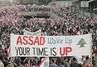

The Syrian Civil War
An Introduction to the Conflict
The Arab Spring

The conflict in Syria began during the popular uprising now known as the Arab Spring. Since the decline of Colonialism The Middle East and North Africa have seen a rise in dictatorial regimes. These regimes are often backed by western countries as they are seen as a more stable option when confronted with radical Islamic elements. However these regimes are often incredibly oppressive and universally undemocratic making them unloved or even hated by its citizens. During 2011 many Islamic Countries, including Tunisia, Libya, Egypt, erupted in protests against thier tyranical rulers. These series of revolutions became known as the Arab Spring. The Arab Spring brought about a brand new form of revolutioin that relied heavily on peaceful protest and the spread of information via the internet and social media in order to forward the cause of the revolutionaries. Several countries removed their governments peacefully and transfered to a more democratic regime. However, other countries like Syria and Libya, erupted into devastating civil war.
Escalation of the Conflict
Initially the conflict in Syria was peaceful. The citizens wanted to remove their hated President-for-life Bashar Al-Assad. Assad had been known for his oppressive regime. His secret police were known for arresting, torturing, and killing political opponents. Assad was also a memember of the alawite sect of Islam, which is a relatively small sect. This religious affiliation also contributed to his unpopularity. When the other Arab countries, beginning with Tunisia, started protesting their governments the Syrians joined in. There were marches in major population centers against the Assad regime all across the country. In response Assad sent in armed forces to break up the protests. In March 2011 Assad Security forces open fired on protestors. In response to this the protestors began to get violent and organize into militias. This ultimately led to organized resistance against the regime and the current state of open civil war.